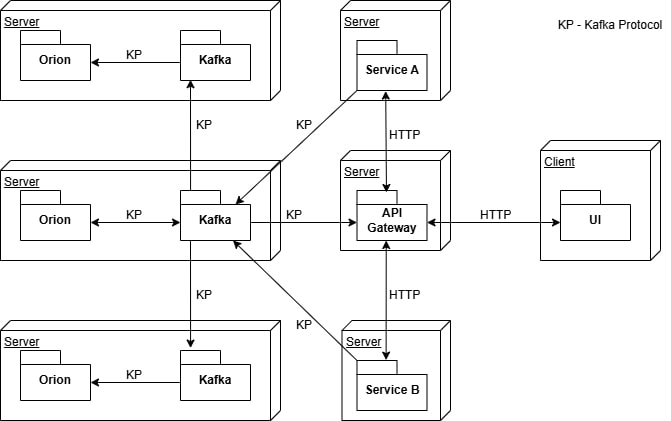

Vyhľadávacia služba Orion môže byť nasadená v jednoduchom režime alebo v režime replikácie v závislosti od vašich požiadaviek.
Jednoduchý režim
V tomto prípade sa používa jeden server brokera a jedna služba Orion, ktoré môžu byť spustené na jednom serveri. Nižšie je uvedený príklad konfigurácie celej serverovej časti prostredníctvom nástroja Docker Compose.
version: '3.8'
services:
broker:
image: confluentinc/cp-kafka
hostname: broker
container_name: broker
ports:
- "9092:9092"
- "9093:9093"
- "9101:9101"
environment:
KAFKA_NODE_ID: 1
KAFKA_LISTENER_SECURITY_PROTOCOL_MAP: 'CONTROLLER:PLAINTEXT,PLAINTEXT:PLAINTEXT,PLAINTEXT_HOST:PLAINTEXT'
KAFKA_ADVERTISED_LISTENERS: 'PLAINTEXT://broker1:29092,PLAINTEXT_HOST://localhost:9092'
KAFKA_OFFSETS_TOPIC_REPLICATION_FACTOR: 1
KAFKA_GROUP_INITIAL_REBALANCE_DELAY_MS: 0
KAFKA_TRANSACTION_STATE_LOG_MIN_ISR: 1
KAFKA_TRANSACTION_STATE_LOG_REPLICATION_FACTOR: 1
KAFKA_JMX_PORT: 9101
KAFKA_JMX_HOSTNAME: localhost
KAFKA_PROCESS_ROLES: 'broker,controller'
KAFKA_CONTROLLER_QUORUM_VOTERS: '1@broker:29093'
KAFKA_LISTENERS: 'PLAINTEXT://broker1:29092,CONTROLLER://broker1:29093,PLAINTEXT_HOST://0.0.0.0:9092'
KAFKA_INTER_BROKER_LISTENER_NAME: 'PLAINTEXT'
KAFKA_CONTROLLER_LISTENER_NAMES: 'CONTROLLER'
KAFKA_LOG_DIRS: '/tmp/kraft-combined-logs'
# Replace CLUSTER_ID with a unique base64 UUID using "bin/kafka-storage.sh random-uuid"
CLUSTER_ID: 'MkU3OEVBNTcwNTJENDM2Qk'
kafka-ui:
image: provectuslabs/kafka-ui:latest
ports:
- "9999:8080"
environment:
DYNAMIC_CONFIG_ENABLED: true
KAFKA_CLUSTERS_0_NAME: local
KAFKA_CLUSTERS_0_BOOTSTRAPSERVERS: broker:29092
orion-service:
image: orion-service:0.0.18
ports:
- "8001:8001"
environment:
KAFKA_DELIVERY_TIMEOUT_MS: 5000
KAFKA_REQUEST_TIMEOUT_MS: 5000
KAFKA_MAX_BLOCK_MS: 5000
SPRING_KAFKA_BOOTSTRAP_SERVERS: broker:29092
ORION_SERVICE_CLUSTER_SIZE: 1
ORION_SERVICE_NODE_ID: 1
networks:
local-kafka:
driver: bridge
volumes:
db:
driver: local
Po spustení tohto docker-compose súboru na lokálnom počítači je možné pristupovať k prehľadu Kafka tém na adrese http://localhost:9999.
Režime replikácie
V tomto prípade sú potrebné aspoň 3 rôzne servery. 
Nižšie je ukázané, ako môže vyzerať nastavenie jedného zo serverov v trojčlennom klastri pomocou nástroja Docker Compose.